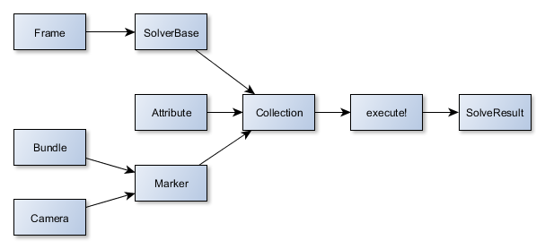

mmSolver.api#
By convention the mmSolver.api functions are expected to be imported into the alias mmapi, examples assume this is done.
import maya.cmds
import mmSolver.api as mmapi
mmapi.load_plugin() # Force load the mmSolver plug-in.
Object Overview#

Class |
Description |
|---|---|
2D point to determine screen-space features |
|
3D point to determine real-location of 2D feature |
|
2D line to define straight line features |
|
Attribute that will be solved |
|
Camera to view the world |
|
Point in time |
|
Options that describe how the solving algorithm will run |
|
A set of Markers, Attributes and Solvers to use during solving |
|
Output of the solver; Details of what happened in a solve |
The above list of classes is simplified. The full list of classes and functions exposed are detailed in mmSolver API.
Example#
Here is a example of how to use the mmSolver Python API.
First a Camera, Bundle and Marker are created, these
are used to define the re-projection and perspective.
Next, Attributes, Solvers and Frames must be created.
All API objects are then added into the Collection, and the collection
is executed.
Finally, a SolverResult is returned from the executed Collection and
an be used to check the Solver output (for example, did an error occur?).
# Camera
cam_tfm = maya.cmds.createNode('transform',
name='cam_tfm')
cam_shp = maya.cmds.createNode('camera',
name='cam_shp',
parent=cam_tfm)
cam = mmapi.Camera(shape=cam_shp)
maya.cmds.setAttr(cam_tfm + '.tx', -1.0)
maya.cmds.setAttr(cam_tfm + '.ty', 1.0)
maya.cmds.setAttr(cam_tfm + '.tz', -5.0)
# Bundle
bnd = mmapi.Bundle().create_node()
bundle_tfm = bnd.get_node()
maya.cmds.setAttr(bundle_tfm + '.tx', 5.5)
maya.cmds.setAttr(bundle_tfm + '.ty', 6.4)
maya.cmds.setAttr(bundle_tfm + '.tz', -25.0)
# Marker
mkr = mmapi.Marker().create_node()
maya.cmds.setAttr(marker_tfm + '.tx', -2.5)
maya.cmds.setAttr(marker_tfm + '.ty', 1.3)
maya.cmds.setAttr(marker_tfm + '.tz', -10)
mkr.set_bundle(bnd)
mkr.set_camera(bnd)
# Attributes
attr_tx = mmapi.Attribute(bundle_tfm + '.tx')
attr_ty = mmapi.Attribute(bundle_tfm + '.ty')
# Solver
sol = mmapi.SolverStep()
sol.set_verbose(True)
sol.add_frame(1)
sol.set_frame_list([1])
# Collection
col = mmapi.Collection()
col.create('mySolveCollection')
col.set_solver(sol)
col.add_marker(marker_tfm)
col.add_attribute(attr_tx)
col.add_attribute(attr_ty)
# Run solver!
result = col.execute()
print 'Solve Error:', result.get_error()
mmSolver API#
Camera#
- class mmSolver.api.Camera(transform=None, shape=None)#
The Camera to view the world and compute re-projection error; Markers are attached to cameras.
Example usage:
>>> import mmSolver.api as mmapi >>> cam_tfm = maya.cmds.createNode('transform', name='cam_tfm') >>> cam_shp = maya.cmds.createNode('camera', name='cam_shp', parent=cam_tfm) >>> cam = mmapi.Camera(shape=cam_shp) >>> cam.get_transform_node() '|cam_tfm' >>> cam.get_shape_node() '|cam_tfm|cam_shp'
- __init__(transform=None, shape=None)#
Initialise a Camera object.
Give either a transform or shape node and the object will find the other node.
If no ‘transform’ or ‘shape’ is given, the Camera is uninitialized.
- Parameters:
transform (None or str) – The camera transform node.
shape (None or str) – The camera shape node.
- get_transform_node()#
Get the camera transform node.
- Returns:
The camera transform node or None
- Return type:
None or str or unicode
- get_transform_uid()#
Get the camera transform unique identifier.
- Returns:
The camera transform UUID or None
- Return type:
None or str or unicode
- set_transform_node(name)#
Change the underlying Maya nodes that this Camera class will manipulate.
This function will automatically set the Camera shape node based this transform node.
- Parameters:
name (str) – The existing Maya node.
- get_shape_node()#
Get the camera shape node.
- Returns:
The camera shape node or None
- Return type:
None or str or unicode
- get_shape_uid()#
Get the camera shape unique identifier.
- Returns:
The camera shape UUID or None
- Return type:
None or str or unicode
- set_shape_node(name)#
Change the underlying Maya nodes that this Camera class will manipulate.
This function will automatically set the Camera transform node based this shape node.
- Parameters:
name (str) – The existing Maya node.
- get_plate_resolution()#
Get the resolution of the image attached to this camera, or return a default value if no image is attached.
- Returns:
Tuple of X and Y resolution.
- Return type:
(int, int)
- get_average_deviation()#
Get the average deviation for all marker under the camera.
- Returns:
The deviation of the marker-to-bundle re-projection in pixels.
- Return type:
float
- get_deviation(times=None)#
Get the deviation for all marker under the camera at the current times.
- Parameters:
times (float) – The times to query the deviation on, if not given the current frame is used.
- Returns:
The deviation of the marker-to-bundle re-projection in pixels.
- Return type:
float
- get_maximum_deviation()#
Get the maximum deviation (and frame) for all marker under the camera.
- Parameters:
times (float) – The times to query the deviation on, if not given the current frame is used.
- Returns:
- Return type:
(float, float)
- get_marker_list()#
Get the list of Markers under this camera.
- Returns:
List of Marker objects.
- Return type:
- is_valid()#
Is this Camera object valid? Does the Camera have both transform and shape nodes and they both exist?
- Returns:
True or False, is this Camera object valid?
- Return type:
bool
- get_lens_enable()#
Get the lens distortion mode of the camera.
- set_lens_enable(value)#
Set the lens distortion mode of the camera.
- get_lens()#
Get the lens connected to the camera.
- Returns:
Lens object, or None if Camera does not have a Lens.
- Return type:
None or Lens
- set_lens(lens)#
Connect this Camera to the given Lens.
Note
If the lens argument is None, the Camera is disconnected from any lens.
- Parameters:
lens (None or Lens) – The Lens to connect this Camera to.
- Returns:
None
Bundle#
- class mmSolver.api.Bundle(node=None)#
The 3D Bundle object.
A Bundle is named ‘Bundle’ as it represents bundles of light forming on an imaging sensor.
Example usage:
>>> bnd = mmapi.Bundle(node='myNode') >>> bnd.get_node() '|myNode' >>> bnd = mmapi.Bundle().create_node(name='myBundle1') >>> bnd.get_node() '|myBundle1'
- __init__(node=None)#
Create a Bundle object initialised with ‘node’.
- Parameters:
node (str) – Maya node to attach this object to.
- get_node()#
Get the bundle transform node.
- Returns:
The bundle transform node or None
- Return type:
None or str or unicode
- set_node(node)#
This Bundle object will affect the given ‘node’.
- Parameters:
node (str) – Node to set to.
- Returns:
Nothing.
- get_node_uid()#
Get the bundle transform unique identifier.
- Returns:
The bundle UUID or None
- Return type:
None or str or unicode
- create_node(name='bundle1', colour=None)#
Create a Bundle.
- Parameters:
name (str) – The name of the newly created Bundle.
colour ((float, float, float) or None) – Colour of bundle as R, G and B. ‘None’ will leave as default.
- Returns:
Bundle object attached to newly created node.
- Return type:
- delete_node()#
Remove the Maya node (and all data) of this Bundle object.
- Returns:
This Bundle object, with Maya node removed.
- Return type:
- get_colour_rgb()#
Get the current RGBA colour (0.0 to 1.0) of the Bundle.
- Returns:
Tuple of red, green and blue, or None if colour cannot be found. Each channel is floating point; 0.0 to 1.0.
- Return type:
(float, float, float) or None
- set_colour_rgb(rgb)#
Change the RGBA colour (0.0 to 1.0) of the Bundle.
- Parameters:
rgb (tuple or None) – Colour as R, G, B; Or None to reset to default colour. Each channel is floating point; 0.0 to 1.0.
- Return type:
None
- get_colour_rgba()#
Get the current RGBA colour (0.0 to 1.0) of the Bundle.
- Returns:
Tuple of red, green, blue, and alpha, or None if colour cannot be found. Each channel is floating point; 0.0 to 1.0.
- Return type:
(float, float, float, float) or None
- set_colour_rgba(rgba)#
Change the RGB colour (0.0 to 1.0) of the Bundle.
- Parameters:
rgba (tuple or None) – Colour as R, G, B, A; Or None to reset to default colour. Each channel is floating point; 0.0 to 1.0.
- Return type:
None
Marker#
2D point to determine screen-space features.
- class mmSolver.api.Marker(node=None)#
The 2D Marker object.
A Marker defines a wrapper around a Maya node that contains 2D information, in a camera’s screen-space.
Example usage:
>>> mkr = mmapi.Marker(node='myNode') >>> mkr.get_node() '|myNode' >>> bnd = mmapi.Bundle().create_node(name='myBundle1') >>> mkr = mmapi.Marker().create_node(name='myMarker1', bnd=bnd) >>> mkr.get_node() '|myMarker1'
- __init__(node=None)#
Initialize a Marker, give a name to connect to an existing Maya node.
- Parameters:
node (None or str) – The Maya node to connect to.
- get_node()#
Get the Maya node this object is bound to.
- Returns:
The node this Marker object is bound to, or None.
- Return type:
None or str or unicode
- set_node(node)#
Change the underlying Maya node that this Marker class will manipulate.
- Parameters:
node (str) – The existing Maya node.
- get_node_uid()#
Get the marker transform unique identifier.
- Returns:
The marker UUID or None
- Return type:
None or str or unicode
- get_deviation_anim_curve_fn()#
Get the MFnAnimCurve object for the deviation attribute animCurve.
Note
Returned object is Maya API 1.0.
- Returns:
Maya animCurve function set.
- Return type:
maya.OpenMayaAnim.MFnAnimCurve or None
- set_deviation_anim_curve_fn(value)#
Set the deviation animCurve function set.
- Parameters:
value (maya.OpenMayaAnim.MFnAnimCurve or None) – AnimCurve object to set, or use ‘None’ to remove the reference to the existing animCurve object
- create_node(name='marker1', colour=None, cam=None, mkr_grp=None, bnd=None)#
Create a marker node network from scratch.
- Parameters:
name (str) – Name of the marker to create.
colour ((float, float, float) or None) – Colour of marker as R, G and B. ‘None’ will leave as default.
cam (Camera) – The camera to create the marker underneath.
mkr_grp (MarkerGroup) – The marker group to create the marker underneath.
bnd (Bundle) – The bundle to attach to the newly created marker.
- Returns:
Marker object with newly created node.
- Return type:
- delete_node()#
Remove the Maya node (and all data) of this Marker object.
- Returns:
This Marker object, with Maya node removed.
- Return type:
- add_attributes()#
Add dynamic attributes to marker.
- compute_deviation(times)#
Compute the deviation for the marker.
Note
This function assumes the camera film aperture (the film back) is not animated over the times given.
- Parameters:
times ([float, ..]) – The times to query the deviation on, if not given the current frame is used.
- Returns:
The deviation of the marker-to-bundle re-projection in pixels. The length of the list returned will always equal the length of the ‘times’ argument.
- Return type:
[float, ..]
- get_enable(time=None)#
Get the enabled state of the Marker.
- Parameters:
time (float) – The time to query the enable, if not given the current frame is used.
- Returns:
The enabled state of the marker.
- Return type:
int
- get_enabled_frames(frame_range_start=None, frame_range_end=None)#
Get the list of frames that this Marker is enabled.
If there is no animation curve on a Marker we use the frame_range_start and frame_range_end arguments to determine the enabled frame list. If these frame_range_* arguments are not given the default Maya outer timeline range is used.
- Parameters:
frame_range_start (int) – The frame range start of the marker to consider when no animCurve exists.
frame_range_end (int) – The frame range end of the marker to consider when no animCurve exists.
- Returns:
The enabled frame numbers of the marker.
- Return type:
[int, ..]
- get_weight(time=None)#
Get the weight value Marker.
- Parameters:
time (float) – The time to query the weight, if not given the current frame is used.
- Returns:
The weight of the marker.
- Return type:
float
- get_average_deviation()#
Calculate a single float number (in pixels) representing the average deviation of this Marker.
- set_average_deviation(value)#
Calculate a single float number (in pixels) representing the average deviation of this Marker.
- get_maximum_deviation()#
Return a tuple of (value, frame) for the deviation value and frame number that is the highest.
- set_maximum_deviation(max_dev, max_frm)#
Return a tuple of (value, frame) for the deviation value and frame number that is the highest.
- get_deviation_frames(frame_range_start=None, frame_range_end=None)#
Get the list of frames that this Marker has deviation set.
If there is no animation curve on a Marker we use the frame_range_start and frame_range_end arguments to determine the deviation frame list. If these frame_range_* arguments are not given the default Maya outer timeline range is used.
- Parameters:
frame_range_start (int) – The frame range start of the marker to consider when no animCurve exists.
frame_range_end (int) – The frame range end of the marker to consider when no animCurve exists.
- Returns:
The deviation frame numbers of the marker.
- Return type:
[int, ..]
- get_deviation(times=None)#
Get the deviation for the marker from the internal animCurve.
- Parameters:
times ([float, ..]) – The times to query the deviation on, if not given the current frame is used.
- Returns:
The deviation of the marker-to-bundle re-projection (in pixels), for each time given.
- Return type:
[float, ..]
- set_deviation(times, values)#
Set deviation keyframes on the marker.
- Parameters:
times ([float, ..]) – Times to set deviation values for.
values ([float, ..]) – Values of deviation to set at each time.
- get_colour_rgb()#
Get the current RGBA colour (0.0 to 1.0) of the Marker.
- Returns:
Tuple of red, green and blue, or None if colour cannot be found. Each channel is floating point; 0.0 to 1.0.
- Return type:
(float, float, float) or None
- set_colour_rgb(rgb)#
Change the RGBA colour (0.0 to 1.0) of the Marker.
- Parameters:
rgb (tuple or None) – Colour as R, G, B; Or None to reset to default colour. Each channel is floating point; 0.0 to 1.0.
- Return type:
None
- get_colour_rgba()#
Get the current RGBA colour (0.0 to 1.0) of the Marker.
- Returns:
Tuple of red, green, blue, and alpha, or None if colour cannot be found. Each channel is floating point; 0.0 to 1.0.
- Return type:
(float, float, float, float) or None
- set_colour_rgba(rgba)#
Change the RGB colour (0.0 to 1.0) of the Marker.
- Parameters:
rgba (tuple) – Colour as R, G, B, A; Or None to reset to default colour. Each channel is floating point; 0.0 to 1.0.
- Return type:
None
- get_bundle()#
Get the Bundle connected to this Marker node.
- Returns:
a Bundle object or None if no Bundle is connected.
- Return type:
Bundle or None
- set_bundle(bnd)#
Connect the given Bundle to this Marker.
- Parameters:
bnd (Bundle) – Bundle to connect to.
- get_camera()#
Get the camera connected implicitly with the Marker.
- Returns:
Camera object, or None if Marker does not have a Camera (for example it’s unparented to world).
- Return type:
None or Camera
- set_camera(cam)#
Connect this Marker to the given camera.
Connecting Markers to cameras happens by parenting a Marker under a Camera’s Marker Group.
Note
If the cam argument is None, the Marker is disconnected from any camera.
- Parameters:
cam (None or Camera) – The camera to connect this Marker to.
- Returns:
None
- get_marker_group()#
Get the marker group that implicitly connected to this Marker.
- Returns:
Marker group object.
- Return type:
MarkerGroup or None
- set_marker_group(mkr_grp)#
Set the MarkerGroup for this Marker, or None to unlink the Marker.
- Parameters:
mkr_grp (MarkerGroup or None) – Marker group object to link to this Marker.
- get_used_hint()#
Is the Marker used by the solver?
This attribute does not affect the solve, but is provided as a hint to show users (in UIs), that a marker is unused.
- Returns:
A value of MARKER_USED_HINT_LIST that indicates the current used state hint.
- Return type:
int
- set_used_hint(value)#
Set the value indicating this Marker is used by the solver.
See the Marker.get_used_hint() method for details.
- Parameters:
value (int) – The value to set, a value in MARKER_USED_HINT_LIST.
- mmSolver.api.update_deviation_on_markers(mkr_list, solres_list)#
Calculate marker deviation, and set it on the marker.
- Parameters:
mkr_list ([Marker, ..]) – Marker objects to update deviation on.
solres_list ([SolveResult, ..]) – The solve results to calculate deviation frames from.
- mmSolver.api.calculate_marker_deviation(mkr_node, bnd_node, cam_tfm, cam_shp, times, weights_list, enabled_list, image_width, image_height)#
Calculate the 2D-to-3D pixel distance for the given marker.
- Parameters:
mkr_node (str) – The marker transform node to compute with.
bnd_node (str) – The bundle transform node to compute with.
cam_tfm (str) – The camera transform node to compute with.
cam_shp (str) – The camera shape node to compute with.
times ([float, ..]) – The times to query the deviation.
image_width (float) – The width of the matchmove image plate.
image_height (float) – The height of the matchmove image plate.
- Returns:
List of pixel deviation values for given times.
- Return type:
[float, ..]
- mmSolver.api.get_markers_start_end_frames(selected_markers)#
Gets first and last key from the selected markers list, if no keys found it will return current frame.
- Parameters:
selected_markers (list) – Markers list.
- Returns:
Start and end frame of given markers list.
- Return type:
(int, int)
- mmSolver.api.find_marker_attr_mapping(mkr_list, attr_list)#
Get a mapping of markers to attributes, as a matrix.
- Parameters:
- Returns:
Boolean matrix of size ‘markers x attrs’. Matrix index is ‘mapping[marker_index][attr_index]’, based on the index of the mkr_list and attr_list given.
- Return type:
[[bool, .. ]]
Line#
2D line to define straight line features.
- class mmSolver.api.Line(node=None)#
The 2D Line object.
A Line defines a wrapper around a Maya node that contains 2D information, in a camera’s screen-space.
Example usage:
>>> line = mmapi.Line(node='myNode') >>> line.get_node() '|myNode' >>> cam = mmapi.Camera().create_node(name='myCamera1') >>> line = mmapi.Line().create_node(name='myLine1', cam=cam) >>> line.get_node() '|myLine1'
- __init__(node=None)#
Initialize a Line, give a name to connect to an existing Maya node.
- Parameters:
node (None or str) – The Maya node to connect to.
- get_node()#
Get the Maya node this object is bound to.
- Returns:
The node this Line object is bound to, or None.
- Return type:
None or str or unicode
- set_node(node)#
Change the underlying Maya node that this Line class will manipulate.
- Parameters:
node (str) – The existing Maya node.
- get_node_uid()#
Get the line transform unique identifier.
- Returns:
The line UUID or None
- Return type:
None or str or unicode
- create_node(name='line1', colour=None, cam=None, mkr_grp=None)#
Create a line node network from scratch.
- Parameters:
name (str) – Name of the line to create.
colour ((float, float, float) or None) – Colour of line as R, G and B. ‘None’ will leave as default.
cam (Camera) – The camera to create the line underneath.
mkr_grp (MarkerGroup) – The marker group to create the line underneath.
- Returns:
Line object with newly created node.
- Return type:
- delete_node()#
Remove the Maya node (and all data) of this Line object.
- Returns:
This Line object, with Maya node removed.
- Return type:
- add_attributes()#
Add dynamic attributes to line.
- get_enable(time=None)#
Get the enabled state of the Line.
- Parameters:
time (float) – The time to query the enable, if not given the current frame is used.
- Returns:
The enabled state of the line.
- Return type:
int
- get_enabled_frames(frame_range_start=None, frame_range_end=None)#
Get the list of frames that this Line is enabled.
If there is no animation curve on a Line we use the frame_range_start and frame_range_end arguments to determine the enabled frame list. If these frame_range_* arguments are not given the default Maya outer timeline range is used.
- Parameters:
frame_range_start (int) – The frame range start of the line to consider when no animCurve exists.
frame_range_end (int) – The frame range end of the line to consider when no animCurve exists.
- Returns:
The enabled frame numbers of the line.
- Return type:
[int, ..]
- get_weight(time=None)#
Get the current wire-frame colour of the Line.
- Parameters:
time (float) – The time to query the weight, if not given the current frame is used.
- Returns:
The weight of the line.
- Return type:
float
- get_colour_rgb()#
Get the current RGBA colour (0.0 to 1.0) of the Line.
- Returns:
Tuple of red, green and blue, or None if colour cannot be found. Each channel is floating point; 0.0 to 1.0.
- Return type:
(float, float, float) or None
- set_colour_rgb(rgb)#
Change the RGBA colour (0.0 to 1.0) of the Line.
- Parameters:
rgb (tuple or None) – Colour as R, G, B; Or None to reset to default colour. Each channel is floating point; 0.0 to 1.0.
- Return type:
None
- get_colour_rgba()#
Get the current RGBA colour (0.0 to 1.0) of the Line.
- Returns:
Tuple of red, green, blue, and alpha, or None if colour cannot be found. Each channel is floating point; 0.0 to 1.0.
- Return type:
(float, float, float, float) or None
- set_colour_rgba(rgba)#
Change the RGB colour (0.0 to 1.0) of the Line.
- Parameters:
rgba (tuple or None) – Colour as R, G, B, A; Or None to reset to default colour. Each channel is floating point; 0.0 to 1.0.
- Return type:
None
- get_camera()#
Get the camera connected implicitly with the Line.
- Returns:
Camera object, or None if Line does not have a Camera (for example it’s unparented to world).
- Return type:
None or Camera
- set_camera(cam)#
Connect this Line to the given camera.
Connecting Lines to cameras happens by parenting a Line under a Camera’s Line Group.
Note
If the cam argument is None, the Line is disconnected from any camera.
- Parameters:
cam (None or Camera) – The camera to connect this Line to.
- Returns:
None
- get_marker_group()#
Get the marker group that implicitly connected to this Line.
- Returns:
Marker group object.
- Return type:
MarkerGroup or None
- set_marker_group(mkr_grp)#
Set the MarkerGroup for this Line, or None to unlink the Line.
- Parameters:
mkr_grp (MarkerGroup or None) – Marker group object to link to this Line.
- get_marker_list()#
Get the markers connected implicitly with the Line.
- Returns:
Marker objects, or empty list if Line does not have any Markers connected.
- Return type:
List of Markers
- set_marker_list(mkr_list)#
Connect this Line to the given markers.
If mkr_list is None, this removes all Markers from the Line.
- Returns:
None
- get_marker_point_intersect(mkr)#
Get the mmLinePointIntersect node connected to the given Marker, or return None.
- Return type:
None or str
MarkerGroup#
A group containing Marker nodes.
- class mmSolver.api.MarkerGroup(node=None, name=None)#
The MarkerGroup to transform markers into camera-space.
- __init__(node=None, name=None)#
Initialize the MarkerGroup with the given Maya node.
- Parameters:
node (str or None) – Maya node to attach to.
name (None or str) – This is a backwards compatible kwarg for ‘node’.
- get_node()#
Get the MarkerGroup node.
- Returns:
The markerGroup node or None
- Return type:
None or str or unicode
- set_node(node)#
Set the MarkerGroup to use this Maya node.
- Parameters:
node (str) – Maya node path.
- get_camera()#
Get the attached camera node.
- Returns:
Camera node or None.
- Return type:
Camera or None
- create_node(name='markerGroup1', cam=None)#
Create a MarkerGroup node network.
- Parameters:
name (str) – The newly created node’s name.
cam (Camera) – The camera to attach to.
- Returns:
MarkerGroup object with node set as newly created node.
- is_valid()#
Check if this object’s internal Maya representation is valid or not.
- Returns:
True or False, is this MarkerGroup valid?
- Return type:
bool
Attribute#
Attribute that will be solved.
- class mmSolver.api.Attribute(name=None, node=None, attr=None)#
The Attribute - A variable, or set of variables over time to solve.
Example usage:
>>> import mmSolver.api as mmapi >>> node = maya.cmds.createNode('transform', name='myNode') >>> attr = mmapi.Attribute(node=node, attr='tx') >>> attr.get_node() '|myNode' >>> attr.get_attr() 'translateX' >>> attr.get_attr(long_name=False) 'tx' >>> attr.get_name() '|myNode.translateX' >>> attr.get_state() 1 # 1 == ATTR_STATE_STATIC
- __init__(name=None, node=None, attr=None)#
Initialise an Attribute object.
Attribute can use a ‘name’, or ‘node’ and ‘attr’.
A ‘name’ is a string of both node and attribute path; node.attr.
- Parameters:
name (str) – Node and attribute path as a single string: ‘node.attr’
node (str) – DG Maya node path.
attr (str) – Long or short attribute name.
- get_node(full_path=True)#
Get the node name path from this Attribute.
- Parameters:
full_path (bool) – If True, the full node name hiearachy will be returned, making sure the name is unique.
- Returns:
The node name, or None if the Attribute class does not hold a valid node.
- Return type:
None or str
- get_node_uid()#
Get the Attribute’s node unique identifier.
Warning
Although this returns a “unique” identifier, there are times when UUIDs are not unique. For example with the same Maya scene file referenced into the Maya scene more than once, the referenced node UUID will not change - each copy of the referenced node will have the same UUID value.
- Returns:
The Attribute UUID or None
- Return type:
None or str or unicode
- get_attr(long_name=True)#
- get_attr_nice_name()#
- get_name(full_path=True)#
- get_state()#
- is_static()#
- is_animated()#
- is_locked()#
- get_attribute_type()#
- get_min_value()#
This function is deprecated, please use Collection.get/set_attribute* functions.
- set_min_value(value)#
This function is deprecated, please use Collection.get/set_attribute* functions.
- get_max_value()#
This function is deprecated, please use Collection.get/set_attribute* functions.
- set_max_value(value)#
This function is deprecated, please use Collection.get/set_attribute* functions.
Frame#
- class mmSolver.api.Frame(value, tags=None, primary=False, secondary=False)#
Hold a time value with tags meta-data.
Example usage:
>>> import mmSolver.api as mmapi >>> frmA = mmapi.Frame(1) >>> frmA.get_number() 1 >>> frmA.get_tags() ['normal'] >>> frmB = mmapi.Frame(10, primary=True) >>> frmB.get_number() 10 >>> frmB.get_tags() ['primary'] >>> frmC = mmapi.Frame(20, tags=['custom'], primary=True) >>> frmC.get_number() 20 >>> frmC.get_tags() ['custom', 'primary']
- __init__(value, tags=None, primary=False, secondary=False)#
Initialise a Frame object to hold a frame value and tags.
- Parameters:
value (int or float) – The frame number.
tags ([str, ... ] or None) – List of string values accocated with this frame number.
primary (bool) – Is this frame ‘primary’?
secondary (bool) – Is this frame ‘secondary’?
- get_data()#
Get the data of this Frame, both number and tags.
Data structure returned is:
{ 'number': int or float, 'tags': list of strs, }
- Returns:
Data structure.
- Return type:
dict
- set_data(value)#
Set the internal frame data using once function call.
Expected data structure is:
{ 'number': int or float, 'tags': list of strs, }
- Parameters:
value (dict) – Data structure with both ‘number’ and ‘tags’ keys.
- Returns:
None
- get_number()#
Get the frame number.
- Returns:
The frame number.
- Return type:
int or float
- set_number(value)#
Set the frame number.
- Parameters:
value (int or float) – the frame number.
- Returns:
None
- get_tags()#
Get list of tags associated with this Frame.
- Returns:
List of tags.
- Return type:
[str, … ]
- set_tags(value)#
Set the tags explicitly.
- Parameters:
value (list) – List of tags to set.
- Returns:
None
- add_tag(value)#
Add a tag to the list of (internally stored) tags.
- Parameters:
value (str) – Tag name to add.
- Returns:
None
Root Frame#
Calculating root (or user) frames is essential for solving static attributes with some solvers. These helper functions easily allow you to create, edit and join lists of root frames together.
- mmSolver.api.get_root_frames_from_markers(mkr_list, min_frames_per_marker, start_frame, end_frame)#
Get root frames numbers from the markers.
- Parameters:
mkr_list ([Marker, ..]) – List of Markers to compute root frames from.
min_frames_per_marker (int) – The number of frames that are required for each marker.
start_frame (int) – The first frame to consider as a root frame.
end_frame (int) – The last frame to consider as a root frame.
- Returns:
List of frame numbers.
- Return type:
[int, ..]
- mmSolver.api.root_frames_subdivide(root_frames, max_frame_span)#
Get root frames numbers from the markers.
- Parameters:
max_frame_span (int) – The maximum number of frames between a frame pair the list of root frames.
- Returns:
List of frame numbers.
- Return type:
[int, ..]
- mmSolver.api.root_frames_list_combine(frame_list_a, frame_list_b)#
Get root frames numbers from the markers.
- Parameters:
frame_list_a ([int, ..]) – List of Frames that will be added to the root frames.
frame_list_b ([int, ..]) – List of Frames that will be added to the root frames.
- Returns:
List of frame numbers.
- Return type:
[int, ..]
Solver#
Solvers are compiled into individual Python functions to be run. To compile the Solvers with a consistent interface and manage new solver processes, a SolverBase class has been created.
Users are expected to sub-class SolverBase and add functionality. Pre-existing classes already provide functionality for common solving needs.
Solver Base#
- class mmSolver.api.SolverBase(name=None, data=None, *args, **kwargs)#
The base class of a Solver operation.
A Solver Operation may have any number of methods and data, this class does not enforce a common method interface (yet).
The SolverBase class should be sub-classed and then (at least) the ‘compile’ function should be overridden.
- __init__(name=None, data=None, *args, **kwargs)#
Initialise a SolverBase.
This __init__ should be called by sub-classes, for example:
>>> class MySolver(SolverBase): >>> def __init__(self, *args, **kwargs): >>> super(MySolver, self).__init__(*args, **kwargs)
- Parameters:
name (basestring) – The name of the Solver.
data (dict) – The internal data structure to set inside the Solver base. The data holds information about the current options of the solver.
args (list) – Whatever positional arguments to give to the init function.
kwargs (dict) – Whatever keyword arguments to give to the init function.
- get_name()#
- set_name(name)#
- get_data()#
- set_data(data)#
- get_enabled()#
Flags this solver should not be used for solving. :rtype: bool
- set_enabled(value)#
Set if this solver be used?
- Parameters:
value (bool) – The enabled value.
- get_precomputed_data()#
Get precomputed data that can be re-used inside this Solver.
- Return type:
dict or None
- set_precomputed_data(value)#
Set the precomputed data (dictionary). This precomputed data will be used inside the Solver rather than computing many times.
- Parameters:
value (dict) – The data structure of the precomputed data to be re-used.
- abstract compile(col, mkr_list, attr_list, withtest=False)#
Compile solver into actions.
- Raises:
‘NotValid’, if the compile goes wrong.
- Parameters:
col (Collection) – Collection to be compile.
mkr_list ([Marker, ..]) – List of Markers used in the Solve.
attr_list ([Attribute, ..]) – Attributes to be solved for.
withtest (bool) – Should the tests (validation) be generated along with the real solver steps?
- Returns:
Return a generator, to yield two Action objects.
Solver Basic#
- class mmSolver.api.SolverBasic(*args, **kwargs)#
The basic solver for mmSolver.
This solver will solve Animated attributes only.
Parameters for solver:
Frame Range - with options:
“Single Frame”
“Time Slider (Inner)”
“Time Slider (Outer)”
“Custom”
If a Solver is Single Frame (current frame), then we solve only animated attributes on the current frame, in a single step and return.
- __init__(*args, **kwargs)#
Initialise a SolverBase.
This __init__ should be called by sub-classes, for example:
>>> class MySolver(SolverBase): >>> def __init__(self, *args, **kwargs): >>> super(MySolver, self).__init__(*args, **kwargs)
- Parameters:
name (basestring) – The name of the Solver.
data (dict) – The internal data structure to set inside the Solver base. The data holds information about the current options of the solver.
args (list) – Whatever positional arguments to give to the init function.
kwargs (dict) – Whatever keyword arguments to give to the init function.
- get_use_attr_blocks()#
- Return type:
bool
- set_use_attr_blocks(value)#
- get_eval_object_relationships()#
Get ‘Pre-Solve Object Relationships’ value.
- Return type:
bool
- set_eval_object_relationships(value)#
Set ‘Pre-Solve Object Relationships’ value.
- Parameters:
value (bool or int) – Value to be set.
- get_eval_complex_graphs()#
Get ‘Evaluate Complex Node Graphs’ value.
- Return type:
bool
- set_eval_complex_graphs(value)#
Set ‘Evaluate Complex Node Graph’ value.
- Parameters:
value (bool or int) – Value to be set.
- get_solver_type()#
Get ‘Scene Graph Mode’ value.
- Return type:
int
- set_solver_type(value)#
Set ‘Scene Graph Mode’ value.
- Parameters:
value (int) – Value to be set.
- get_scene_graph_mode()#
Get ‘Scene Graph Mode’ value.
- Return type:
int
- set_scene_graph_mode(value)#
Set ‘Scene Graph Mode’ value.
- Parameters:
value (int) – Value to be set.
- get_use_single_frame()#
Get Use Single Frame value.
- Return type:
bool
- set_use_single_frame(value)#
Set Use Single Frame value.
- Parameters:
value (bool or int) – Value to be set.
- set_single_frame(value)#
Set Single Frame value.
- Parameters:
value (Frame or int) – Value to be set.
- get_anim_iteration_num()#
Get Animation Iteration Number value.
- Return type:
int
- set_anim_iteration_num(value)#
Set Animation Iteration Number value.
- Parameters:
value (int) – Value to be set.
- get_lineup_iteration_num()#
Get Line-up Iteration Number value.
- Return type:
int
- set_lineup_iteration_num(value)#
Set Line-up Iteration Number value.
- Parameters:
value (int) – Value to be set.
- get_solve_focal_length()#
- Return type:
bool
- set_solve_focal_length(value)#
- Parameters:
value (bool or int) – Value to be set.
- get_solve_lens_distortion()#
- Return type:
bool
- set_solve_lens_distortion(value)#
- Parameters:
value (bool or int) – Value to be set.
- get_frame_list()#
Get frame objects attached to the solver.
- Returns:
frame objects.
- Return type:
list of frame.Frame
- get_frame_list_length()#
- add_frame(frm)#
- add_frame_list(frm_list)#
- remove_frame(frm)#
- remove_frame_list(frm_list)#
- set_frame_list(frm_list)#
- clear_frame_list()#
- compile(col, mkr_list, attr_list, withtest=False)#
Compile solver into actions.
- Raises:
‘NotValid’, if the compile goes wrong.
- Parameters:
col (Collection) – Collection to be compile.
mkr_list ([Marker, ..]) – List of Markers used in the Solve.
attr_list ([Attribute, ..]) – Attributes to be solved for.
withtest (bool) – Should the tests (validation) be generated along with the real solver steps?
- Returns:
Return a generator, to yield two Action objects.
Solver Standard#
- class mmSolver.api.SolverStandard(*args, **kwargs)#
The standard solver for mmSolver.
This solver is designed for Animated and Static attributes.
Parameters for solver:
Frame Range - with options:
“Single Frame”
“Time Slider (Inner)”
“Time Slider (Outer)”
“Custom”
Root Frames - A list of integer frame numbers.
Solver Method
“Solve Everything at Once” option - On or Off
“Solve Root Frames Only” option - On or Off
If a Solver is Single Frame (current frame), then we solve both animated and static attributes on the current frame, in a single step and return.
If the Solver Root Frames Only option is On, then we only solve the root frames, with both animated and static attributes.
If the Solver Root Frames Only is Off, then we first solve the root frames with both animated and static attributes, then secondly we solve only animated attributes for the entire frame range.
If the Solve Everything at Once option is On, then the second solve step contains static and animated attributes (not just animated), and all frames are solved as one big crunch.
- __init__(*args, **kwargs)#
Initialise a SolverBase.
This __init__ should be called by sub-classes, for example:
>>> class MySolver(SolverBase): >>> def __init__(self, *args, **kwargs): >>> super(MySolver, self).__init__(*args, **kwargs)
- Parameters:
name (basestring) – The name of the Solver.
data (dict) – The internal data structure to set inside the Solver base. The data holds information about the current options of the solver.
args (list) – Whatever positional arguments to give to the init function.
kwargs (dict) – Whatever keyword arguments to give to the init function.
- get_use_single_frame()#
Get Use Single Frame value.
- Return type:
bool
- set_use_single_frame(value)#
Set Use Single Frame value.
- Parameters:
value (bool or int) – Value to be set.
- set_single_frame(value)#
Set Single Frame value.
- Parameters:
value (Frame or int) – Value to be set.
- get_only_root_frames()#
Get Only Root Frames value.
- Return type:
bool
- set_only_root_frames(value)#
Set Only Root Frames value.
- Parameters:
value (bool or int) – Value to be set.
- get_global_solve()#
Get Global Solve value.
- Return type:
bool
- set_global_solve(value)#
Set Global Solve value.
- Parameters:
value (bool or int) – Value to be set.
- get_triangulate_bundles()#
- Return type:
bool
- set_triangulate_bundles(value)#
- Parameters:
value (bool or int) – Value to be set.
- get_use_attr_blocks()#
- Return type:
bool
- set_use_attr_blocks(value)#
- get_eval_object_relationships()#
Get ‘Pre-Solve Object Relationships’ value.
- Return type:
bool
- set_eval_object_relationships(value)#
Set ‘Pre-Solve Object Relationships’ value.
- Parameters:
value (bool or int) – Value to be set.
- get_eval_complex_graphs()#
Get ‘Evaluate Complex Node Graphs’ value.
- Return type:
bool
- set_eval_complex_graphs(value)#
Set ‘Evaluate Complex Node Graph’ value.
If True, the solve will try to trigger evalation of complex node graphs (such as Mesh Rivets), by changing the timeEvalMode of the mmSolver command.
- Parameters:
value (bool or int) – Value to be set.
- get_solver_type()#
- Return type:
int
- set_solver_type(value)#
- get_scene_graph_mode()#
- Return type:
int
- set_scene_graph_mode(value)#
- get_root_frame_strategy()#
Get Root Frame Strategy value.
- Return type:
bool
- set_root_frame_strategy(value)#
Set Root Frame Strategy value.
The strategy ordering of root frames and how to solve them. Value must be one in ROOT_FRAME_STRATEGY_VALUE_LIST.
- Parameters:
value (int) – Value to be set.
- get_block_iteration_num()#
Get Block Iteration Number value.
- Return type:
bool
- set_block_iteration_num(value)#
Set Block Iteration Number value.
- Parameters:
value (int) – Value to be set.
- get_root_iteration_num()#
Get Root Iteration Number value.
- Return type:
bool
- set_root_iteration_num(value)#
Set Root Iteration Number value.
- Parameters:
value (int) – Value to be set.
- get_anim_iteration_num()#
Get Animation Iteration Number value.
- Return type:
int
- set_anim_iteration_num(value)#
Set Animation Iteration Number value.
- Parameters:
value (int) – Value to be set.
- get_lineup_iteration_num()#
Get Line-up Iteration Number value.
- Return type:
int
- set_lineup_iteration_num(value)#
Set Line-up Iteration Number value.
- Parameters:
value (int) – Value to be set.
- get_solve_focal_length()#
- Return type:
bool
- set_solve_focal_length(value)#
- Parameters:
value (bool or int) – Value to be set.
- get_solve_lens_distortion()#
- Return type:
bool
- set_solve_lens_distortion(value)#
- Parameters:
value (bool or int) – Value to be set.
- get_frame_list()#
Get frame objects attached to the solver.
- Returns:
frame objects.
- Return type:
list of frame.Frame
- get_frame_list_length()#
Return the number of frames in the frame list.
- Return type:
int
- add_frame(frm)#
- add_frame_list(frm_list)#
- remove_frame(frm)#
- remove_frame_list(frm_list)#
- set_frame_list(frm_list)#
- clear_frame_list()#
- get_root_frame_list()#
Get frame objects attached to the solver.
- Returns:
frame objects.
- Return type:
list of frame.Frame
- get_root_frame_list_length()#
Return the number of frames in the root frame list.
- Return type:
int
- add_root_frame(frm)#
- add_root_frame_list(frm_list)#
- remove_root_frame(frm)#
- remove_root_frame_list(frm_list)#
- set_root_frame_list(frm_list)#
- clear_root_frame_list()#
- compile(col, mkr_list, attr_list, withtest=False)#
Compile solver into actions.
- Raises:
‘NotValid’, if the compile goes wrong.
- Parameters:
col (Collection) – Collection to be compile.
mkr_list ([Marker, ..]) – List of Markers used in the Solve.
attr_list ([Attribute, ..]) – Attributes to be solved for.
withtest (bool) – Should the tests (validation) be generated along with the real solver steps?
- Returns:
Return a generator, to yield two Action objects.
Solver Camera#
- class mmSolver.api.SolverCamera(*args, **kwargs)#
The camera solver for mmSolver.
This solver is designed to solve a camera from scratch, with only 2D Markers as input. The solver assumes the camera is not nodal and has parallax. The camera translations, rotations, focal length and lens distortion can be calculated by this solver.
This solver requires that the camera and bundles are fully unlocked - attributes will be calculated automatically.
Parameters for solver:
Frame Range - with options:
“Single Frame”
“Time Slider (Inner)”
“Time Slider (Outer)”
“Custom”
User Frames - A list of integer frame numbers.
Root Frames - An semi-automatic list of integer frame numbers.
Choices of what to solve.
“Solve Everything at Once” option - On or Off
“Solve Root Frames Only” option - On or Off
Scene Scale and Orientation options.
Origin Frame - The frame to set the camera at the origin.
Scene Scale - How large will the entire camera path be?
- __init__(*args, **kwargs)#
Initialise a SolverBase.
This __init__ should be called by sub-classes, for example:
>>> class MySolver(SolverBase): >>> def __init__(self, *args, **kwargs): >>> super(MySolver, self).__init__(*args, **kwargs)
- Parameters:
name (basestring) – The name of the Solver.
data (dict) – The internal data structure to set inside the Solver base. The data holds information about the current options of the solver.
args (list) – Whatever positional arguments to give to the init function.
kwargs (dict) – Whatever keyword arguments to give to the init function.
- get_solver_type()#
Get ‘Scene Graph Mode’ value.
- Return type:
int
- set_solver_type(value)#
Set ‘Scene Graph Mode’ value.
- Parameters:
value (int) – Value to be set.
- get_bundle_iteration_num()#
- Return type:
bool
- set_bundle_iteration_num(value)#
- Parameters:
value (int) – Value to be set.
- get_root_iteration_num()#
- Return type:
bool
- set_root_iteration_num(value)#
- Parameters:
value (int) – Value to be set.
- get_anim_iteration_num()#
- Return type:
int
- set_anim_iteration_num(value)#
- Parameters:
value (int) – Value to be set.
- get_frame_list()#
Get frame objects attached to the solver.
- Returns:
frame objects.
- Return type:
list of frame.Frame
- get_frame_list_length()#
Return the number of frames in the frame list.
- Return type:
int
- add_frame(frm)#
- add_frame_list(frm_list)#
- remove_frame(frm)#
- remove_frame_list(frm_list)#
- set_frame_list(frm_list)#
- clear_frame_list()#
- get_root_frame_list()#
Get frame objects attached to the solver.
- Returns:
frame objects.
- Return type:
list of frame.Frame
- get_root_frame_list_length()#
Return the number of frames in the root frame list.
- Return type:
int
- add_root_frame(frm)#
- add_root_frame_list(frm_list)#
- remove_root_frame(frm)#
- remove_root_frame_list(frm_list)#
- set_root_frame_list(frm_list)#
- clear_root_frame_list()#
- set_origin_frame(value)#
Set Origin Frame value.
- Parameters:
value (Frame or int) – Value to be set.
- get_triangulate_bundles()#
- Return type:
bool
- set_triangulate_bundles(value)#
- Parameters:
value (bool or int) – Value to be set.
- get_adjust_every_n_poses()#
- Return type:
bool
- set_adjust_every_n_poses(value)#
- Parameters:
value (bool or int) – Value to be set.
- get_scene_scale()#
- Return type:
float
- set_scene_scale(value)#
- Parameters:
value (float) – Value to be set.
- get_solve_focal_length()#
- Return type:
bool
- set_solve_focal_length(value)#
- Parameters:
value (bool or int) – Value to be set.
- get_solve_lens_distortion()#
- Return type:
bool
- set_solve_lens_distortion(value)#
- Parameters:
value (bool or int) – Value to be set.
- compile(col, mkr_list, attr_list, withtest=False)#
Compile solver into actions.
- Raises:
‘NotValid’, if the compile goes wrong.
- Parameters:
col (Collection) – Collection to be compile.
mkr_list ([Marker, ..]) – List of Markers used in the Solve.
attr_list ([Attribute, ..]) – Attributes to be solved for.
withtest (bool) – Should the tests (validation) be generated along with the real solver steps?
- Returns:
Return a generator, to yield two Action objects.
Solver Step#
The mmSolver.api.SolverStep is used to represent frames
to be solved.
Note
For backwards compatibility the SolverStep class can also be accessed
with the class name mmSolver.api.Solver. This is deprecated
and will be removed in a future version.
- class mmSolver.api.SolverStep(*args, **kwargs)#
Defines an individual invocation of a solver.
The SolverStep contains the following properties:
Maximum Number of Iterations Max iterations
Tau - Initial Damping Factor - Tau factor
Epsilon #1 - Acceptable Gradient Change - Gradient error factor
Epsilon #2 - Acceptable Parameter Change - Parameter error factor
Epsilon #3 - Acceptable Deviation Error - Error factor
Solver type
Use animated attributes
Use static attributes
Use frame tags
Frame list
See the individual methods for more information.
- __init__(*args, **kwargs)#
Create a SolverStep class with default values.
- Parameters:
args – Not used.
kwargs – Not used.
- get_max_iterations()#
Get the maximum number of iterations the solve will perform.
- Return type:
int or None
- set_max_iterations(value)#
Set the maximum number of iterations.
- Parameters:
value (int) – Max iterations number.
- get_delta_factor()#
Get the parameter delta factor.
- Return type:
float or None
- set_delta_factor(value)#
Set the parameter delta factor.
- Parameters:
value (float) – Delta factor number.
- get_auto_diff_type()#
Get method used to calculate differencing.
- Return type:
int or None
- set_auto_diff_type(value)#
Set automatic differencing method.
- Parameters:
value (int or None) – The method to be used. Must be a value in AUTO_DIFF_TYPE_LIST.
- get_tau_factor()#
Get the Tau factor value.
- Return type:
float or None
- set_tau_factor(value)#
Set the Tau factor value.
- Parameters:
value (float) – Initial damping Tau value.
- get_gradient_error_factor()#
Get the error factor for steepness changes.
- Return type:
float or None
- set_gradient_error_factor(value)#
Set the error factor for steepness changes.
- Parameters:
value –
- get_parameter_error_factor()#
Get error level for parameter changes.
- Return type:
float or None
- set_parameter_error_factor(value)#
Set error level for parameter changes.
- Parameters:
value (float) – Value to set.
- get_auto_parameter_scaling()#
- Return type:
bool or None
- set_auto_parameter_scaling(value)#
- get_error_factor()#
Get error level for deviation changes.
- Return type:
float or None
- set_error_factor(value)#
Set error level for deviation changes.
- Parameters:
value (float) – Value to set.
- get_solver_type()#
The type of internal solver library to use, as an index.
See the question How do I get the list of supported Solver Types?, for more details of the values returned.
- Return type:
int or None
- set_solver_type(value)#
Set the internal solver library to use for solving.
See the question How do I get the list of supported Solver Types?, for more details of the values that can be set.
- Parameters:
value (int) – Solver type index number.
- get_scene_graph_mode()#
- Return type:
int or None
- set_scene_graph_mode(value)#
- get_verbose()#
Should we print lots of information to the terminal?
- Return type:
bool or None
- set_verbose(value)#
Set verbosity option, yes or no.
- Parameters:
value (bool) – Turn on verbose mode? Yes or no.
- get_robust_loss_scale()#
- Return type:
float or None
- set_robust_loss_scale(value)#
- Parameters:
value –
- get_robust_loss_type()#
- Return type:
int or None
- set_robust_loss_type(value)#
- Parameters:
value (int or None) – The method to be used. Must be a value in ROBUST_LOSS_TYPE_LIST.
- get_time_eval_mode()#
- set_time_eval_mode(value)#
- get_frame_solve_mode()#
- set_frame_solve_mode(value)#
- get_use_smoothness()#
- set_use_smoothness(value)#
- get_use_stiffness()#
- set_use_stiffness(value)#
- get_remove_unused_markers()#
- set_remove_unused_markers(value)#
- get_remove_unused_attributes()#
- set_remove_unused_attributes(value)#
- get_attributes_use_animated()#
- set_attributes_use_animated(value)#
- get_attributes_use_static()#
- set_attributes_use_static(value)#
- get_frames_use_tags()#
- set_frames_use_tags(value)#
- get_frame_list()#
Get frame objects attached to the solver.
- Returns:
frame objects.
- Return type:
list of frame.Frame
- get_frame_list_length()#
- add_frame(frm)#
- add_frame_list(frm_list)#
- remove_frame(frm)#
- remove_frame_list(frm_list)#
- set_frame_list(frm_list)#
- clear_frame_list()#
- get_solver_version()#
- Return type:
int or None
- set_solver_version(value)#
- Parameters:
value – May be SOLVER_VERSION_ONE or SOLVER_VERSION_TWO.
- compile(col, mkr_list, attr_list, withtest=False)#
Compiles data given into flags for a single run of ‘mmSolver’.
- Parameters:
self (Solver) – The solver to compile
col (Collection) – The collection to compile.
mkr_list (list of Marker) – Markers to measure
attr_list (list of Attribute) – Attributes to solve for
- Returns:
Yields a tuple of two Actions at each iteration. First action is the solver action, second action is for validation of the solve.
- Return type:
Collection#
- class mmSolver.api.Collection(node=None, name=None)#
Holds all data needed for a mmSolver run.
- __init__(node=None, name=None)#
Initialize the Collection with the given Maya node.
- Parameters:
node (str or None) – Maya node to attach to.
name (None or str) – This is a backwards compatible kwarg for ‘node’.
- create_node(name)#
Create a collection set node.
- add_attributes()#
Adds attributes to the collection node, if they do not already exist.
- get_node()#
- get_node_uid()#
- set_node(name)#
- get_last_solve_timestamp()#
- get_last_solve_duration()#
- get_last_solve_results()#
- get_solver_list()#
Get Solver objects attached to the collection.
- Returns:
Solver objects.
- Return type:
list of solverop.Solver
- get_solver_list_length()#
- add_solver(sol)#
- add_solver_list(sol_list)#
- remove_solver(sol)#
- remove_solver_list(sol_list)#
- set_solver_list(sol_list)#
- clear_solver_list()#
- get_marker_list()#
- get_marker_list_length()#
- add_marker(mkr)#
- add_marker_list(mkr_list)#
- remove_marker(mkr)#
- remove_marker_list(mkr_list)#
- set_marker_list(mkr_list)#
- clear_marker_list()#
- get_attribute_list()#
- get_attribute_list_length()#
- add_attribute(attr)#
- add_attribute_list(attr_list)#
- remove_attribute(attr)#
- remove_attribute_list(attr_list)#
- set_attribute_list(attr_list)#
- clear_attribute_list()#
- get_attribute_min_enable(attr)#
- set_attribute_min_enable(attr, value)#
- get_attribute_min_enable_plug_name(attr)#
- get_attribute_min_value(attr)#
- set_attribute_min_value(attr, value)#
- get_attribute_min_value_plug_name(attr)#
- get_attribute_max_enable(attr)#
- set_attribute_max_enable(attr, value)#
- get_attribute_max_enable_plug_name(attr)#
- get_attribute_max_value(attr)#
- set_attribute_max_value(attr, value)#
- get_attribute_max_value_plug_name(attr)#
- get_attribute_stiffness_enable(attr)#
- set_attribute_stiffness_enable(attr, value)#
- get_attribute_stiffness_enable_plug_name(attr)#
- get_attribute_stiffness_weight(attr)#
- set_attribute_stiffness_weight(attr, value)#
- get_attribute_stiffness_weight_plug_name(attr)#
- get_attribute_stiffness_variance(attr)#
- set_attribute_stiffness_variance(attr, value)#
- get_attribute_stiffness_variance_plug_name(attr)#
- get_attribute_smoothness_enable(attr)#
- set_attribute_smoothness_enable(attr, value)#
- get_attribute_smoothness_enable_plug_name(attr)#
- get_attribute_smoothness_weight(attr)#
- set_attribute_smoothness_weight(attr, value)#
- get_attribute_smoothness_weight_plug_name(attr)#
- get_attribute_smoothness_variance(attr)#
- set_attribute_smoothness_variance(attr, value)#
- get_attribute_smoothness_variance_plug_name(attr)#
- get_attribute_previous_value(attr)#
- set_attribute_previous_value(attr, value)#
- get_attribute_previous_value_plug_name(attr)#
- get_attribute_mean_value(attr)#
- set_attribute_mean_value(attr, value)#
- get_attribute_mean_value_plug_name(attr)#
- get_attribute_variance_value(attr)#
- set_attribute_variance_value(attr, value)#
- get_attribute_variance_value_plug_name(attr)#
- get_attribute_used_hint(attr)#
- set_attribute_used_hint(attr, value)#
- get_line_list()#
- get_line_list_length()#
- add_line(line)#
- add_line_list(line_list)#
- remove_line(line)#
- remove_line_list(line_list)#
- set_line_list(line_list)#
- clear_line_list()#
- is_valid(prog_fn=None, status_fn=None)#
Tests if the current sate of this Collection is valid to solve with.
- Parameters:
prog_fn (callable) – Progress function callback. If not None this function will be executed to emit progress messages.
status_fn (callable) – Status message function callback. If not None this function will be executed each time a status message needs to be printed.
- Returns:
Is the Collection valid to solve? Yes or no.
- Return type:
bool
- execute(options=None, log_level=None, prog_fn=None, status_fn=None, info_fn=None)#
- mmSolver.api.update_deviation_on_collection(col, solres_list)#
Set keyframe data on the collection for the solver.
- mmSolver.api.run_progress_func(prog_fn, value)#
Call the prog_fn callable function, if it’s not None.
- Parameters:
prog_fn (callable or None) – Callable function to print or save the ‘value’ argument.
value (int or float) – Expected to be a percent number from 0 to 100.
- mmSolver.api.run_status_func(status_fn, text)#
Call the status_fn callable function, if it’s not None.
- Parameters:
status_fn (callable or None) – Callable function to print or save the ‘text’ argument.
text (str) – Text to display as the current status.
- mmSolver.api.is_single_frame(kwargs)#
Logic to determine if the solver arguments will solve a single frame or not.
- Parameters:
kwargs (dict) – Solver keyword arguments.
- Returns:
If the given ‘kwargs’ argument defines only one unique frame to solve.
- Return type:
bool
- mmSolver.api.disconnect_animcurves(kwargs)#
HACK: Disconnect animCurves from animated attributes, then re-connect afterward. This is to solve a Maya bug, which will not solve values on a single frame.
- Parameters:
kwargs (dict) – Solver keyword arguments.
- Returns:
Pairs of source and destination plugs that have been disconnected by this function.
- Return type:
[(str, str), ..]
- mmSolver.api.reconnect_animcurves(kwargs, save_node_attrs, force_dg_update=True)#
Re-connect animation curves previously disconnected using ‘disconnect_animcurves’ function
- Parameters:
kwargs (dict) – Solver keyword arguments.
save_node_attrs ([(str, str), ..]) – List of pairs of Maya node.attrs to be re-connected.
force_dg_update (bool) – Should the DG network be updated?
- mmSolver.api.clear_attr_keyframes(kwargs, frames)#
Evaluates the animated attributes at ‘frames’, then deletes the existing animCurves.
- Parameters:
kwargs (dict) – Solver keyword arguments.
- mmSolver.api.generate_isolate_nodes(kwargs)#
Create a list of Maya nodes to be shown to the user during solving.
- Parameters:
kwargs (dict) – Solver keyword arguments.
- Returns:
List of Maya nodes.
- Return type:
[str, ..]
Action#
- class mmSolver.api.Action(func, args, kwargs)#
- property args#
Alias for field number 1
- property func#
Alias for field number 0
- property kwargs#
Alias for field number 2
- mmSolver.api.action_func_is_mmSolver(action)#
- mmSolver.api.action_func_is_mmSolverAffects(action)#
- mmSolver.api.func_str_to_callable(func_str)#
Convert a function written as a string, to be a callable object.
- mmSolver.api.action_to_components(action)#
Execute#
- class mmSolver.api.ExecuteOptions(verbose, refresh, disable_viewport_two, force_update, pre_solve_force_eval, do_isolate, display_grid, display_node_types, use_minimal_ui)#
- property disable_viewport_two#
Alias for field number 2
- property display_grid#
Alias for field number 6
- property display_node_types#
Alias for field number 7
- property do_isolate#
Alias for field number 5
- property force_update#
Alias for field number 3
- property pre_solve_force_eval#
Alias for field number 4
- property refresh#
Alias for field number 1
- property use_minimal_ui#
Alias for field number 8
- property verbose#
Alias for field number 0
- mmSolver.api.create_execute_options(verbose=False, refresh=False, disable_viewport_two=True, force_update=False, do_isolate=False, pre_solve_force_eval=True, display_grid=True, display_node_types=None, use_minimal_ui=None)#
Create
ExecuteOptionsobject.If a keyword argument is not given, a reasonable default value is used.
- Parameters:
verbose (bool) – Print extra solver information while a solve is running.
refresh (bool) – Should the solver refresh the viewport while solving?
disable_viewport_two (bool) – Turn off Viewport 2.0 update, before solving?
force_update (bool) – Force updating the DG network, to help the solver in case of a Maya evaluation DG bug.
do_isolate (bool) – Isolate only solving objects while performing the solve.
pre_solve_force_eval (bool) – Before solving, we kick-start the evaluation by changing time and forcing update.
display_grid (bool) – Display grid in the viewport while performing the solve?
display_node_types – Allow a dict to be passed to the function specifying the object type and the visibility status during solving. This allows us to turn on/off any object type during solving. If an argument is not given or is None, the object type visibility will not be changed.
use_minimal_ui (bool) – Change the Solver UI to be “minimal”, the revert after a solve completes (or fails).
- mmSolver.api.validate(col, as_state=None)#
Validates the given collection state, is it ready for solving?
- Parameters:
col (Collection) – The Collection object to be validated.
as_state (bool) – If True, return an ActionState class, rather than a big plain-old-data structure (documented below).
- Returns:
A list of states of the validations, or a list of validations, with a single valid boolean (did the validation succeed?). See
_run_validate_action()function return types for more details.- Return type:
(bool, [str, ..], [(int, int, int), ..]) or [ActionState, ..]
- mmSolver.api.execute(col, options=None, validate_mode=None, log_level=None, prog_fn=None, status_fn=None, info_fn=None)#
Compile the collection, then pass that data to the ‘mmSolver’ command.
The mmSolver command will return a list of strings, which will then be passed to the SolveResult class so the user can query the raw data using an interface.
- Parameters:
col (Collection) – The Collection to execute.
options (ExecuteOptions) – The options for the execution.
validate_mode (str or None) – How should the solve validate? Must be one of the VALIDATE_MODE_VALUE_LIST values.
log_level (str) – The log level for the execution.
prog_fn (callable or None) – The function used report progress messages to the user.
status_fn (callable or None) – The function used to report status messages to the user.
info_fn (callable or None) – The function used to report information messages to the user.
- Returns:
List of SolveResults from the executed collection.
- Return type:
[SolverResult, ..]
SolveResult#
- class mmSolver.api.SolveResult(*args, **kwargs)#
The information returned from a solve.
All information from the solver, can then be queried as needed. This class never modifies data, it only stores and queries data.
- __init__(*args, **kwargs)#
Create a new SolveResult using command data from maya.cmds.mmSolver command.
- Parameters:
cmd_data ([[str, ..], ..]) – Command data from mmSolver.
- get_data_raw()#
Get a copy of the raw data given to this object at initialization.
It is possible to re-create this object exactly by saving this raw data and re-initializing the object with this data.
- get_success()#
Command Success or not? Did the solver fail?
- get_final_error()#
The single error value representing the solve at it’s last state.
- get_user_interrupted()#
Did the user purposely cancel the solve?
- get_error_stats()#
Details for the error (deviation) of the solve.
- get_timer_stats()#
Details for how long different aspects of the solve took to compute.
- get_solver_stats()#
Details of internal solver.
- get_print_stats()#
Details of internal statistics that can be gathered and printed out.
- get_frame_list()#
The list of frames that this solve result contains.
- get_frame_error_list()#
The error (deviation) per-frame of the solver.
- get_marker_error_list(marker_node=None)#
Get a list of errors (deviation) for all markers, or the given marker.
- Parameters:
marker_node (str or None) – The specific marker node to get an error list for.
- Returns:
A dict of marker node names and time values, giving the error (deviation).
- Return type:
{“marker_node”: {float: float}}
- mmSolver.api.combine_timer_stats(solres_list)#
Combine Timer statistics into one set.
- Parameters:
solres_list ([SolveResult, ..]) – List of SolveResult to combine together.
- Returns:
A map of time statistics, accumulated over all runs of the Solver.
- Return type:
dict
- mmSolver.api.merge_frame_error_list(solres_list)#
Combine a ‘frame_error_list’ from a list of SolveResult objects.
The ‘solres_list’ is assumed to represent sequential solver executions; The order of this list is important, because only the last solved error value is used.
- Parameters:
solres_list ([SolveResult, ..]) – List of SolveResult to merge together.
- Returns:
Mapping of frame number to error values.
- Return type:
dict
- mmSolver.api.get_average_frame_error_list(frame_error_list)#
Get the average error for the frame error map given.
- Parameters:
frame_error_list ({float: float}) – Mapping of frame and error deviation.
- Returns:
Average error across all frames.
- Return type:
float
- mmSolver.api.get_max_frame_error(frame_error_list)#
Get the frame and error combination for the frame error map given.
If frame_error_list given is empty, the returned frame will be None.
- Parameters:
frame_error_list ({float: float}) – Mapping of frame and error deviation.
- Returns:
The frame and error with the maximum amount of error.
- Return type:
(int or None, float)
- mmSolver.api.merge_marker_error_list(solres_list)#
Combine a ‘marker_error_list’ from a list of SolveResult objects.
Note
The ‘solres_list’ is assumed to represent sequential solver executions; The order of this list is important, because only the last solved error value is used.
- Parameters:
solres_list ([SolveResult, ..]) – List of SolveResult to merge together.
- Returns:
Mapping of frame number to error values.
- Return type:
dict
- mmSolver.api.merge_marker_node_list(solres_list)#
Get all the markers used in the SolveResults given.
- Parameters:
solres_list ([SolveResult, ..]) – List of SolveResult to merge together.
- Returns:
A list of Maya nodes of Markers.
- Return type:
[str, ..]
- mmSolver.api.format_timestamp(value)#
Convert a ‘UNIX Epoch’ float number to a human-readable Timestamp.
- Parameters:
value (float) – Input UNIX Epoch as returned by ‘time.time()’ function.
- Returns:
Human (and machine) readable timestamp.
- Return type:
str
Naming#
- mmSolver.api.find_valid_maya_node_name(name, prefix=None, auto_add_num=True, auto_add_num_padding=3, auto_inc=True, auto_inc_try_limit=999)#
Get a new valid Maya name - canonical function to get valid Maya node names.
Examples of auto-adding a number suffix:
>>> find_valid_maya_node_name('name') name_001 >>> find_valid_maya_node_name('name', auto_add_num_padding=4) name_0001
Examples of auto-incrementing:
>>> find_valid_maya_node_name('name_01') name_02 >>> find_valid_maya_node_name('name_001') name_002 >>> find_valid_maya_node_name('001') prefix_002
- Parameters:
name (str) – The name string to validate.
prefix (str or None) – Prefix to add to name in case of invalid first character.
auto_add_num (bool) – If given a node with no number in it, should we add a number automatically?
auto_add_num_padding (int) – Padding of the number to add, 2 = ‘01’, 3 = ‘001’, 4 = ‘0001’.
auto_inc (bool) – Should we auto-increment the number in the name?
auto_inc_try_limit (int) – When trying to find a non-existing Maya node name, how many times can we increment until we give up?
- Returns:
A valid Maya node name.
- Return type:
str
- mmSolver.api.get_new_marker_name(name, prefix=None, suffix=None)#
Create a name for a marker object, using ‘name’ as the base identifier.
- Parameters:
name (str) – Name of object.
prefix (str or None) – Prefix of the marker, if a number is the first character. If None, a default name is added.
suffix (str or None) – Suffix of the marker, added to the name. If None, a default name is added.
- Returns:
Name for the marker.
- Return type:
str
- mmSolver.api.get_new_bundle_name(name, prefix=None, suffix=None)#
Create a name for a bundle object, using ‘name’ as the base identifier.
- Parameters:
name (str) – Name of object.
prefix (str or None) – Prefix of the bundle, if a number is the first character. If None, a default name is added.
suffix (str or None) – Suffix of the bundle, added to the name. If None, a default name is added.
- Returns:
Name for the bundle.
- Return type:
str
- mmSolver.api.get_new_line_name(name, prefix=None, suffix=None)#
Create a name for a line object, using ‘name’ as the base identifier.
- Parameters:
name (str) – Name of object.
prefix (str or None) – Prefix of the line, if a number is the first character. If None, a default name is added.
suffix (str or None) – Suffix of the line, added to the name. If None, a default name is added.
- Returns:
Name for the line.
- Return type:
str
Utilities#
- mmSolver.api.load_plugin()#
Load the mmSolver plugin.
Raises a RuntimeError exception if a plug-in cannot be loaded.
- Returns:
None
- mmSolver.api.get_object_type(node)#
The canonical function to interpret a node as an MM Solver object type.
Possible object type values are:
OBJECT_TYPE_MARKER
OBJECT_TYPE_LINE
OBJECT_TYPE_BUNDLE
OBJECT_TYPE_ATTRIBUTE
OBJECT_TYPE_CAMERA
OBJECT_TYPE_LENS
OBJECT_TYPE_IMAGE_PLANE
OBJECT_TYPE_MARKER_GROUP
OBJECT_TYPE_COLLECTION
OBJECT_TYPE_UNKNOWN
Note
Giving a shape or transform of an object may return different values depending on the type. Below lists the types and the expected input node type.
Markers - transform nodes
Bundle - transform nodes
Attribute - plug path (node.attr)
Camera - transform or shape node
Marker Group - transform ‘mmMarkerGroupTransform’ node
Collection - set node
- Parameters:
node (str) – Maya node path to get type of.
- Returns:
The object type string; One of the values in OBJECT_TYPE_LIST
- Return type:
OBJECT_TYPE_*
- mmSolver.api.get_marker_group_above_node(node)#
Get the first marker group transform node above the node.
- Parameters:
node (str) – The node name to check above for a marker group.
- Returns:
String of marker group found, or None.
- Return type:
str
State#
The state functions are used for getting and setting global states (global variables).
Note
Global state must be used carefully. We recommend using try-except-finally blocks to ensure global state is returned to the intended values if any exception is raised.
- mmSolver.api.is_solver_running()#
Get the current state of the mmSolver command; is it running?
- Returns:
State of mmSolver running.
- Return type:
bool
- mmSolver.api.set_solver_running(value)#
Get the current state of the mmSolver command; is it running?
- Parameters:
value (bool) – Value of the solver running, True or False.
- mmSolver.api.get_user_interrupt()#
Has the user requested to cancel the current solve?
- Returns:
If the user wants to interrupt.
- Return type:
bool
- mmSolver.api.set_user_interrupt(value)#
Tell mmSolver if the user wants to interrupt.
- Parameters:
value (bool) – Value of the interrupt, True or False.
Node Conversions#
The mmSolver.api module provides functions to convert between
various node types. Currently the following conversions are supported:
Bundles -> Markers
Markers -> Bundles
Markers -> Cameras
- mmSolver.api.get_marker_nodes_from_bundle_nodes(nodes)#
Get a list of marker nodes from the given list of bundle nodes
Bundle nodes are automatically filtered from the given ‘nodes’.
- Parameters:
nodes ([str, ..]) – Candidates for bundle nodes to search with.
- Returns:
List of marker nodes attached to the given bundle nodes.
- Return type:
[str, ..]
- mmSolver.api.get_bundle_nodes_from_marker_nodes(nodes)#
Convert Marker nodes into Bundle nodes.
- Parameters:
nodes ([str, ..]) – Maya nodes to convert into Bundles (expected to be Marker nodes, but other node types will not cause errors).
- Returns:
All Maya nodes connected to Marker nodes as Bundles.
- Return type:
[str, ..]
- mmSolver.api.get_camera_nodes_from_marker_nodes(nodes)#
Get the list of Camera nodes that are ‘connected’ to the markers nodes.
- Parameters:
nodes ([str, ..]) – Marker nodes.
- Returns:
A list of camera transform and shape tuples.
- Return type:
[(str, str), ..]
Nodes Filter#
- mmSolver.api.filter_nodes_into_categories(nodes)#
Return nodes sorted into mmSolver-specific object type categories.
Supported categories are:
OBJECT_TYPE_CAMERA
OBJECT_TYPE_MARKER
OBJECT_TYPE_LINE
OBJECT_TYPE_LENS
OBJECT_TYPE_IMAGE_PLANE
OBJECT_TYPE_MARKER_GROUP
OBJECT_TYPE_BUNDLE
OBJECT_TYPE_ATTRIBUTE
OBJECT_TYPE_COLLECTION
‘other’
- Parameters:
nodes (list of str) – Maya nodes to categorise.
- Returns:
Dictionary with lists for each object type.
- Return type:
dict
- mmSolver.api.filter_marker_nodes(nodes)#
Filter the given ‘nodes’ by only the Marker nodes.
- Parameters:
nodes (list or str) – List of nodes to query.
- Returns:
A list of Marker nodes, or empty list if no Marker nodes.
- Return type:
list
- mmSolver.api.filter_line_nodes(nodes)#
Filter the given ‘nodes’ by only the Line nodes.
- Parameters:
nodes (list or str) – List of nodes to query.
- Returns:
A list of Line nodes, or empty list if no Line nodes.
- Return type:
list
- mmSolver.api.filter_lens_nodes(nodes)#
Filter the given ‘nodes’ by only the lens nodes.
- Parameters:
nodes (list or str) – List of nodes to query.
- Returns:
A list of lens nodes, or empty list if no lens nodes.
- Return type:
list
- mmSolver.api.filter_image_plane_nodes(nodes)#
Filter the given ‘nodes’ by only the imagePlane nodes.
- Parameters:
nodes (list or str) – List of nodes to query.
- Returns:
A list of imagePlane nodes, or empty list if no imagePlane nodes.
- Return type:
list
- mmSolver.api.filter_marker_group_nodes(nodes)#
Filter the given ‘nodes’ by only the MarkerGroup nodes.
- Parameters:
nodes (list or str) – List of nodes to query.
- Returns:
A list of MarkerGroup nodes, or empty list if no MarkerGroup nodes.
- Return type:
list
- mmSolver.api.filter_bundle_nodes(nodes)#
Filter the given ‘nodes’ by only the Bundle nodes.
- Parameters:
nodes (list or str) – List of nodes to query.
- Returns:
A list of Bundle nodes, or empty list if no Bundle nodes.
- Return type:
list
- mmSolver.api.filter_camera_nodes(nodes)#
Filter the given ‘nodes’ by only the camera nodes.
- Parameters:
nodes (list or str) – List of nodes to query.
- Returns:
A list of camera nodes, or empty list if no camera nodes.
- Return type:
list
- mmSolver.api.filter_collection_nodes(nodes)#
Filter the given ‘nodes’ by only the Collection nodes.
- Parameters:
nodes (list or str) – List of nodes to query.
- Returns:
A list of Collection nodes, or empty list if no Collection nodes.
- Return type:
list
Exceptions#
- class mmSolver.api.MMException#
Base class for all mmSolver exceptions.
- class mmSolver.api.NotValid#
Raised when an object is not valid.
- class mmSolver.api.AlreadyLinked#
Raised when two objects are already connected (linked).
- class mmSolver.api.AlreadyUnlinked#
Raised when two objects are already disconnected (unlinked).
- class mmSolver.api.NotEnoughMarkers#
There are too many Attribute values in the solver for the Markers given.
- class mmSolver.api.SolverNotAvailable#
Raised when the mmSolver cannot be used (because the plug-in isn’t loaded).
Constants#
There are constants used in mmSolver. These constants represent configuration or an enumeration of options. These constants are referenced inside the documentation.
- api.OBJECT_TYPE_UNKNOWN = 'unknown'#
- api.OBJECT_TYPE_ATTRIBUTE = 'attribute'#
- api.OBJECT_TYPE_MARKER = 'marker'#
- api.OBJECT_TYPE_CAMERA = 'camera'#
- api.OBJECT_TYPE_MARKER_GROUP = 'markergroup'#
- api.OBJECT_TYPE_BUNDLE = 'bundle'#
- api.OBJECT_TYPE_LINE = 'line'#
- api.OBJECT_TYPE_LENS = 'lens'#
- api.OBJECT_TYPE_COLLECTION = 'collection'#
- api.OBJECT_TYPE_IMAGE_PLANE = 'imageplane'#
- api.OBJECT_TYPE_LIST = ['unknown', 'attribute', 'marker', 'camera', 'lens', 'markergroup', 'bundle', 'collection', 'imageplane']#
- api.ATTR_STATE_INVALID = 0#
- api.ATTR_STATE_STATIC = 1#
- api.ATTR_STATE_ANIMATED = 2#
- api.ATTR_STATE_LOCKED = 3#
- api.SOLVER_TYPE_CMINPACK_LM = 1#
- api.AUTO_DIFF_TYPE_FORWARD = 0#
- api.AUTO_DIFF_TYPE_CENTRAL = 1#
- api.AUTO_DIFF_TYPE_LIST = [0, 1]#